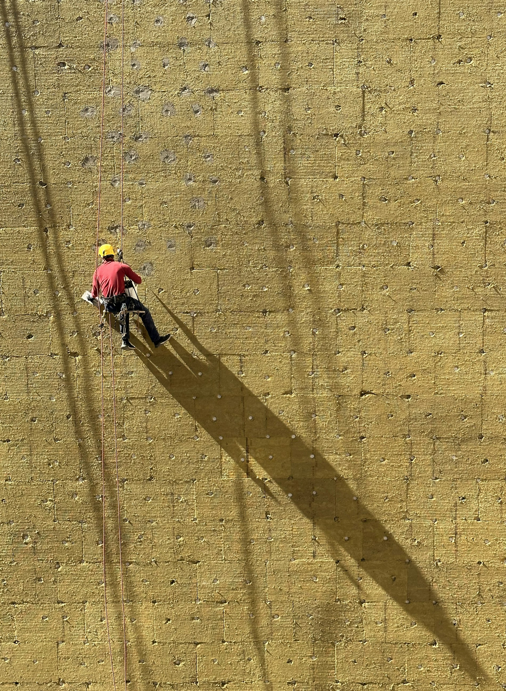
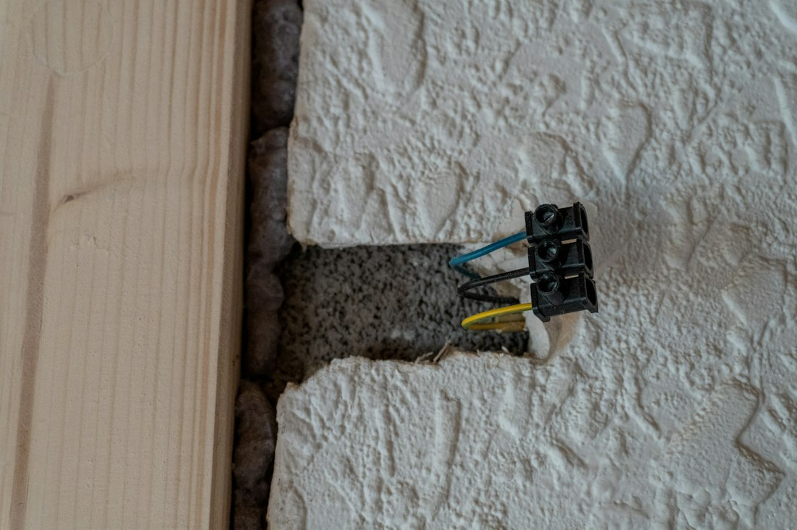
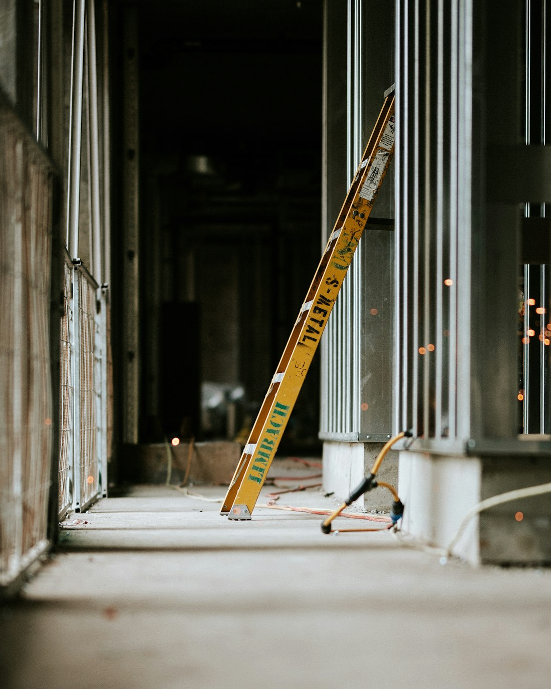

Inicio / Aislamiento
Aislamiento
Acústico y térmico. La parte del trabajo que no se ve al terminar, pero que se nota cada noche y en cada factura de la luz.
Servicio 03 · titulación propia
El ruido no se tapa,
se desacopla
Rellenar un tabique de lana no es aislar. Aislar es cortar el camino por el que viaja el sonido: el aire, sí, pero sobre todo la estructura. Somos técnicos instaladores de sistemas acústicos y de aislamiento, y esa diferencia es justo la que sabemos ejecutar.

EjecuciónTres cosas que lo cambian todo
Un mismo tabique, con los mismos materiales, puede rendir muy distinto según cómo se monte. Estos son los puntos donde se gana o se pierde el aislamiento:
- Desacoplar — banda elástica en todo el perímetro para que la estructura no transmita
- Masa y cámara — doble placa y cámara rellena, no hueca
- Sellado — cada paso de tubo o caja sin sellar es una fuga de ruido directa
Por eso pedimos ver el espacio antes de presupuestar: sin saber de dónde viene el ruido, cualquier solución es una apuesta.
Casos habituales
Dónde solemos
entrar a trabajar
Locales y hostelería
Música, campanas de extracción o maquinaria que molestan a los vecinos de arriba. Techos y trasdosados desacoplados para cumplir sin cerrar el negocio.
- Techos flotantes
- Trasdosados de medianera
- Cajeados de máquinas
Viviendas y medianeras
El vecino que se oye como si estuviera en el salón. Trasdosado acústico sobre la pared conflictiva, sin tocar la del vecino.
- Medianeras
- Dormitorios
- Cuartos de instalaciones
Aislamiento térmico
Trasdosado interior en fachadas frías o que se recalientan en verano. La reforma térmica más rápida sin tocar la fachada.
- Fachadas norte
- Bajo cubierta
- Puentes térmicos
Salas y estudios
Espacios donde el sonido tiene que quedarse dentro: ensayo, grabación, consultas o despachos con confidencialidad.
- Cajas desacopladas
- Puertas acústicas
- Tratamiento interior

MaterialesMateriales que usamos
El aislante se elige por espesor y densidad, no por precio de saco. En el presupuesto siempre consta cuál se monta.
- Lana mineral — el relleno habitual de tabiques y trasdosados
- Lana de roca de alta densidad — cuando el objetivo acústico es exigente
- Placa de alta densidad — masa añadida en trasdosados de medianera
- Bandas y anclajes elásticos — la pieza clave del desacoplamiento
- Masilla acústica — sellado de encuentros y pasos de instalación
Diagnóstico en 3 preguntas
Cuéntanos qué oyes
y te decimos qué hacer
No todos los ruidos se resuelven igual, y algunos no se resuelven del todo. Responde tres preguntas y te damos la solución que aplicaríamos nosotros, con lo que puedes esperar de ella.
Dudas frecuentes
Lo que más nos preguntan
Tengo un vecino ruidoso. ¿Se soluciona?
En la mayoría de casos se reduce mucho, pero hay que ser honestos: si el ruido entra por el forjado o por una instalación común, actuar solo sobre una pared no lo elimina. Vamos, escuchamos el problema y te decimos qué mejora real puedes esperar antes de que gastes el dinero.
¿Cuánto espacio pierdo con un trasdosado acústico?
Entre 5 y 10 centímetros según la solución. En un trasdosado acústico serio no conviene bajar de esa cámara: cuanto más estrecha, menos rinde.
¿El aislamiento térmico por dentro merece la pena?
Cuando no se puede actuar en fachada, es la opción más rentable: se ejecuta en días, sin andamios ni licencias de fachada, y el salto de confort en habitaciones frías se nota el primer invierno.
¿Hace falta un estudio acústico?
Para una vivienda, normalmente no. Para una actividad con licencia (bar, sala, gimnasio) el ayuntamiento suele exigir ensayo de un técnico competente: nosotros ejecutamos la solución y nos coordinamos con quien firme el estudio.
¿Ruido, frío o humedad?
Cuéntanos qué se oye, desde dónde y a qué horas. Con eso y unas fotos ya podemos orientarte sobre la solución y el coste.